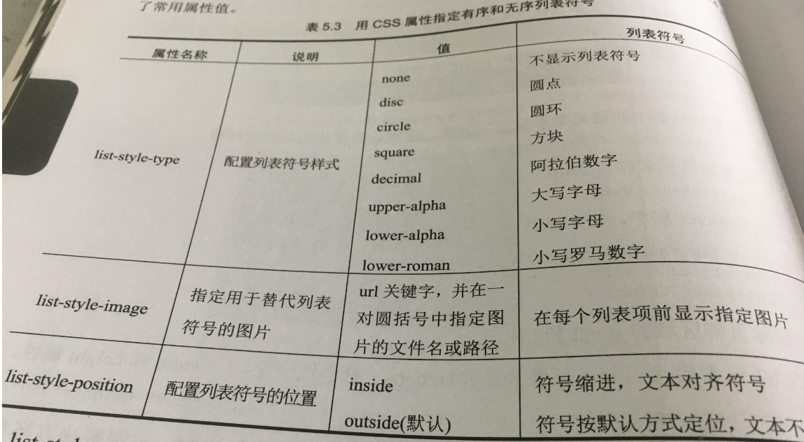

图片与文本基础
-----注释添加可以用/**/
5.1图片
1.gif图片：最大颜色数256，保存时采用无损压缩
2.JPEG图片:可以包含1670万种颜色，保存时采用有损压缩，压缩率小的质量更高。为了避免图片因压缩率过高而导致的像素化，一般使用PS或Adobe Fireworks优化。GIMP（http://www.gimp.org）是一款流行的，支持多平台的开源图像编辑器。Pixlr也提供了图片编辑器
另一个优化的办法就是使用图片的缩小版本，成为缩略图，一般将缩略图配置成图片链接，点击可显示更大尺寸的图片
3.PNG图片：“可移植网络图形”，结合了上面两者的优势，且支持无损压缩。
4.WebP图片格式
5.2 IMG元素
Img元素在网页上配置图片。Img元素是void元素，不成对使用（不需要成对使用起始和结束标记）。
例子：配置名为logo.gif的图片
<img src =”logo.gif” height=”200” width=”500” alt=”My Company Name”>
Str属性指定图片的文件名。Alt属性为图片提供文字代替
5.3图片链接
将图片作为超链接
<a href=”index.html”><img src =”logo.gif” height=”200” width=”500” alt=”My Company Name”></a>
缩略图链接是将小图配置成链接，点击它就可以显示由href属性指定的大图
<a href=”sunset.jpg”><img src =”logo.gif” height=”200” width=”500” alt=”My Company Name”></a>
5.4配置背景图片：
1.background-image属性
例子：body{background-image: url(texture1.png)}
注：url表示引用，如果要引用其他文件夹中的该图片，即url(某文件夹名/texture1.png)
2.background-attachment属性
使用background-attachment属性配置背景图片是在网页中滚动的还是将其固定。对应的值分别是scroll（默认）,fixed
5.5定位背景图片：
浏览器的默认行为是重复（平铺）背景图片，使之充满容器元素的整个背景
1.background-repeat属性.
属性值包括repeat(默认),repeat-y(垂直重复),repeat-x(水平重复),no-repeat(不重复)
2.定位背景图片:
可用background-position属性指定背景图片的位置（默认左上角）.
有效属性包括:百分比值，像素值，或者left , top, center, bottom(底部)和right
例子 两种配置方法
background-position : right;
background-repeat : no-repeat; }
2. body { background-color:#f4ffe4;
color:#333333;
background-image: url(trilliumgradient.png);
background: url(trilliumfoot.gif) no-repeat right bottom,
url(trilliumgradient.png);
}
5.7用CSS配置字体
Font-family属性,用来配置字体
P { font-family :Verdana, Arial ,sans-serif}
5.8 CSS文本属性
关于网页文本CSS提供了大量的选项,常用的有:
Font-size, font-weight, font-style(倾斜显示), line-height, text-align(左右对齐), text-decoration , text-indent, text-transform, letter-spacing(间距)
5.10用CSS配置列表符号

5.11收藏图标
地址栏或网页标签上的小图标就是收藏图标，大小为16x16或者32x32像素
<link rel=”icon” href=”favicon.ico” type=”image/x-icon”>
导入.css时rel=”stylesheet” 且要丢在<head>里面
如何创建自己的收藏图标？使用图像处理软件或者以下某个联机工具
5.12图像映射
为图片配置多个可点击或可选择区域，它们链接到其他网页或网站。
<map id="fishing" name="fishing">
<area href="http://nature.org" shape="rect" coords="0,51,416,170" alt="The Nature Conservancy" title="The Nature Conservancy">
<area href="http://www.fishingdoorcounty.com" shape="rect" coords="24,188,339,283" alt="Door County Fishing Charter" title="Door County Fishing Charter">
</map>
<img src="fishingboat.jpg" usemap="#fishing" alt="Door County" height="350" width="416">